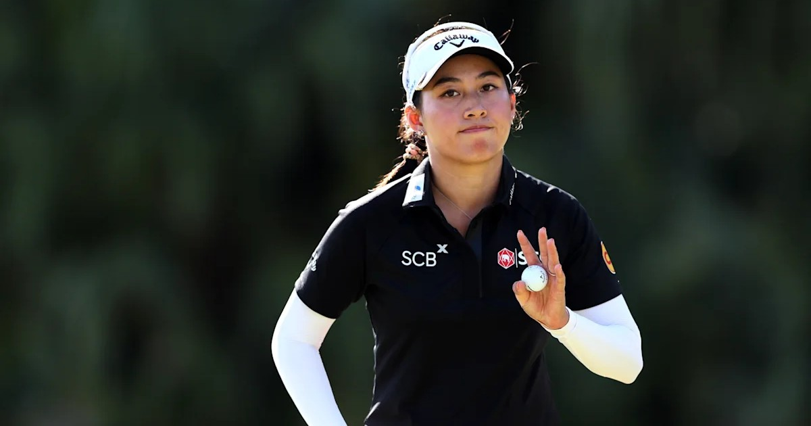

Jeeno Thitikul just passed Annika Sorenstam — a 25-year-old record falls as the 23-year-old three-peats at the CME
Jeeno Thitikul closed with a 7-under 65 to win the CME Group Tour Championship for the third straight year — and the winner's check moved her past Annika Sorenstam as the LPGA's all-time money leader.

Disclosure: this post contains affiliate links. I earn a commission on qualifying purchases.
The win
Jeeno Thitikul owns Tiburon Golf Club, and she made it official again on Sunday.
The 23-year-old from Thailand closed with a bogey-free 7-under 65 to win the CME Group Tour Championship for a third consecutive year, finishing at 24 under — two shots clear of Japan's Aki Iwai, who also shot 65 and still took home $1 million for second. Thitikul started the final round one shot behind 54-hole leader A Lim Kim, erased the deficit immediately with an eagle on the par-5 first, and never gave the lead back.
It is her 12th career LPGA victory and her fifth of 2026, a season that also included wins on home soil in Thailand, at the Mizuho Americas Open, the Standard Portland Classic and the Lotte Championship. She made 18 cuts in 20 starts with 11 top-10 finishes. And she still has never won a major.
The record
The winner's check was $4 million — the largest first-place prize in women's golf — and it carried Thitikul past Annika Sorenstam to the top of the LPGA's all-time money list.
Thitikul's career earnings now stand at $24,292,858. Sorenstam's mark of $22,583,693 had stood for 25 years, since 2001. Sorenstam won 72 times and retired in 2008; Thitikul passed her in just 104 career starts, against Sorenstam's 308.
The three wins at Tiburon account for $12 million of Thitikul's total — nearly half of everything she has ever earned on tour, from one tournament. No player had won the same LPGA event three years running since Inbee Park at the Women's PGA Championship from 2013 to 2015.
"I have no words," Thitikul said afterward, turning to CME Group CEO Terry Duffy. "Just don't change the course until I retire."
The one who also passed her
Nelly Korda finished solo third at 20 under after a closing 68, and her $550,000 check moved her past Sorenstam too — Korda now sits second on the career list at $22,972,616.
A win on Sunday would also have put Korda into the LPGA Hall of Fame — she is one point short of the 27 required — but her putter went cold on the par-5s and the wait continues into 2027. Thitikul also edged Korda for the season money title, finishing the year at $6,923,458.
"It's really hard to go up against Jeeno out here," Korda said. "I feel like she just has this place figured out."
What it means
A record that survived a quarter-century — through the entire careers of everyone who came after Sorenstam — fell to a 23-year-old in her fifth season on tour, at a tournament she has now won three times in a row. Thitikul is the LPGA's all-time money leader before her 24th birthday, before a single major title, and the gap between her and the rest of the list is only going to grow from here.
Sources
• Jeeno Thitikul three-peats at CME, earning another $4 million check (Golfweek)
• Thitikul cashes in at LPGA finale to win $4M prize for 3rd (AP via theScore)
• Jeeno Thitikul surpasses Annika Sorenstam to become LPGA's all-time money leader (Golf Channel)
• Thitikul, Korda Break Sorenstam's 25-Year-Old LPGA Money Record (Front Office Sports)
Gear up: Fanatics